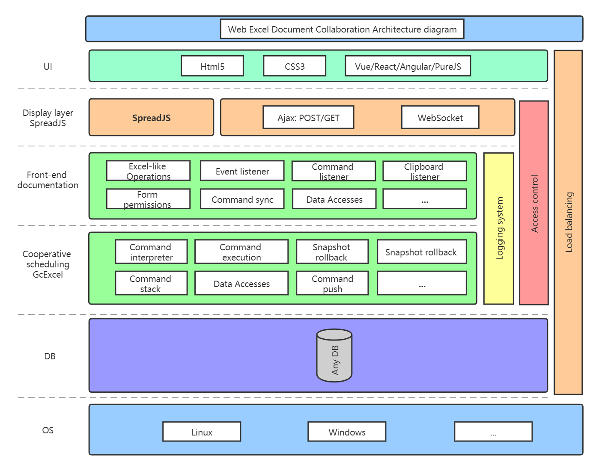
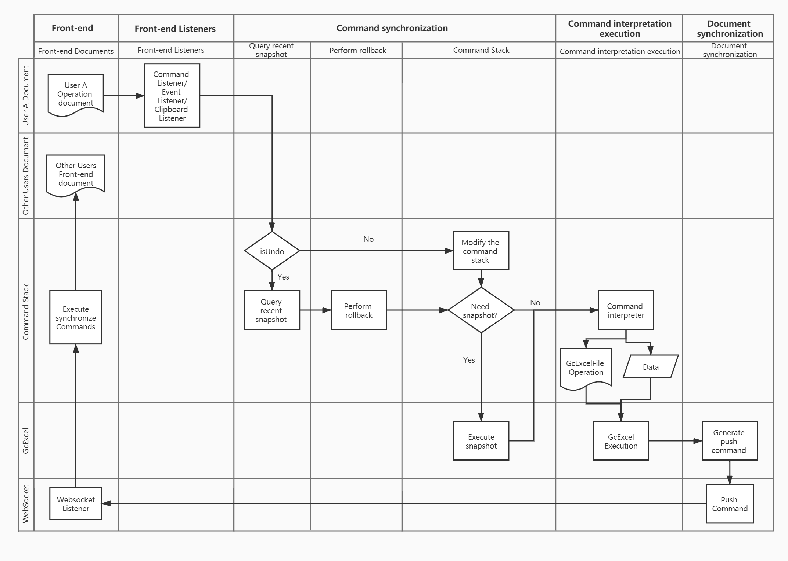

无论从哪个方面看，协同文档都是一个及其复杂的课题。自己毕竟实际参与过协同项目，这么有含金量的课题，不使劲水上一整个系列简直对不起自己（大雾）。
本篇只是协同系列的开端，仅仅简单总结了个架构，未来计划会从场景、分类、实现思路、难点分析等方面展开。
Origin: https://gcdn.grapecity.com.cn/showtopic-87102-1-1.html
背景描述：
自从2020年初疫情爆发以来，远程办公的需求急剧扩张，迅速形成了一个小风口。在这之前鲜有人问津的协同文档的实现，也开始频繁见到这样的需求。作为市场上最为主流的协同表格前（后）端所依赖的控件，SpreadJS支撑起了石墨文档、腾讯文档、飞书、语雀、科大讯飞、网易灵犀文档等一众互联网软件企业的协同表格文档产品。
协同是个非常大的话题，还不算相关程度比较高的版本管理功能，以后博客中会慢慢完善这些。
架构、流程图：


关键名词注释:
Command listener: 命令监听. SpreadJS 会把用户的操作封装成Command, **可以拿到用户执行操作时触发命令的json对象.
Clipboard listener: 剪贴板监听. 浏览器剪贴板的复制和粘贴是特殊操作, 需要在极短的窗口期内才能监听到, 需要特殊处理.
Command stack: 命令栈. 用户操作的行为被封装成命令后, 被维护在命令栈中, 以供撤销和回滚操作.
Command interpreter: 命令解释器. 用户的操作, 数据和自定义信息(例如用户信息, 权限等) 都被打包成 Command Json发回后端, 后端需要针对这个Command进行解释, 以便后端执行协同操作.
Create Snapshot: 创建快照. (图中有误, 第一个 Snapshot rollback -> Create Snapshot)
Snapshot rollback: 回滚快照. 当用户执行撤回操作时, 实际上是回滚到指定的快照上.